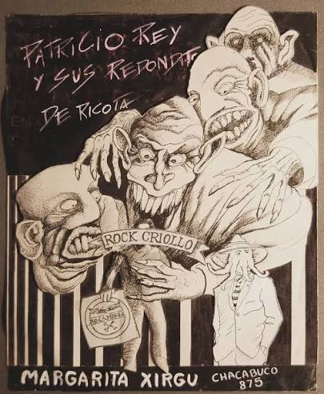
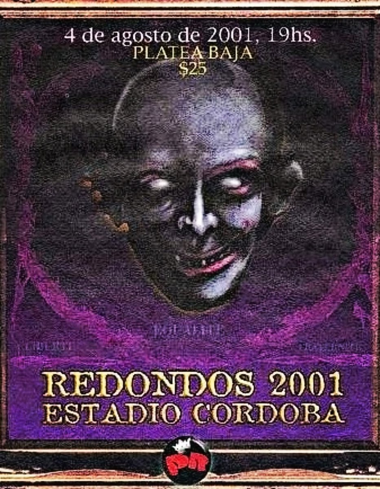

DE LA COFRADÍA AL MITO VISUAL
- Aerógrafo y tinta china
- Cofradía de la Flor Solar
- Ediciones artesanales
- Gráfica de culto
Antes de que existiera un solo disco prensado, la identidad visual de Los Redondos ya circulaba en volantes mimeografiados y afiches pegados a mano en las paredes de La Plata. Ricardo Cohen, formado en Bellas Artes y miembro fundador de La Cofradía de la Flor Solar, asumió la dirección artística total del grupo.
Ante la negativa histórica de la banda a posar para fotografías promocionales, las ilustraciones de Rocambole ocuparon el lugar del retrato oficial y construyeron un lenguaje simbólico propio.

LA TAPA ES LA CARA DEL DISCO
“NO HABÍA FOTOS DE LOS MÚSICOS EN LOS MEDIOS; LA IMAGEN GRÁFICA OCUPABA TODO EL ESPACIO SIMBÓLICO.”
DISCOGRAFÍA ILUSTRADA
Diez tapas concebidas como piezas autónomas, siempre a color. Seleccioná cada portada para ampliar la obra y su ficha técnica.
TRES ETAPAS DE TALLER
De Gulp! a La mosca y la sopa (1985–1991)
Originales trabajados sobre cartón ilustración con tinta china, acrílico y aerógrafo. La escala del vinilo de 30 × 30 cm permitía desplegar texturas pictóricas y composiciones que funcionaban como afiches callejeros.
El puño, las cadenas y el corazón con alas
Símbolos concebidos para las tapas y entradas que el público apropió de inmediato: fueron pintados en banderas de tela, muros barriales y tatuajes mucho antes de existir merchandising oficial.
De Luzbelito a Momo Sampler (1996–2000)
Cuando el CD amenazaba con reducir la escala visual, Rocambole transformó el empaque en objeto editorial de colección y experimentó con herramientas digitales 3D sin perder el tono inquietante.
ENTRADAS, AFICHES Y OBRA PÚBLICA
El diseño no terminaba en la disquería. Cada recital contaba con entradas numeradas e ilustradas especialmente para evitar falsificaciones, además de gacetillas mimeografiadas y telones escénicos pintados para cada gira.
Con el correr de las décadas, el archivo gráfico de Rocambole se convirtió en patrimonio visual del rock argentino, exhibido en museos y retrospectivas en todo el país.

ANTERIOR
← NOVENTASSIGUIENTE
DISOLUCIÓN →